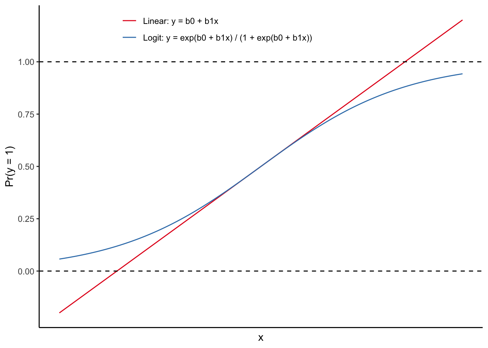
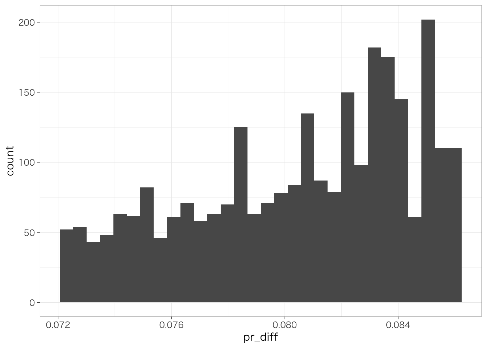

Chapter 10 ロジスティック回帰分析
本章では、前章で学んだ回帰分析を発展させて、複数の独立変数を扱う方法について説明する。
内容に入る前に、右上のプロジェクトのボックスの横が、前章で作成したプロジェクトの名前（たとえば、seminar_sociology_r）になっているかどうかを確認しておこう。なっていない場合は、右上のボックスをクリックして、「Open Project…」を選択し、前章で作成したRprojファイル（たとえば、seminar_sociology_r.Rprojといったような名前になっている）を選んで、プロジェクトを切り替えよう。
さらに、これまでの章で説明した以下のパッケージを読み込んだ上で、第4章で作成したデータを読み込んでpiaacというデータフレームに入れていることを前提とする。具体的には、以下のコードを実行しておく必要がある。
library(tidyverse)
library(gtsummary)
library(flextable)
library(modelsummary)
library(ggeffects) #第9章（交互作用）で紹介済
piaac <- read_rds("data/piaac_sample_analytic.rds")第5章で確認したように、ggplotの設定を変更しておくことで見やすいグラフを作ることができる。ここでは以下のコードを実行している。
Macの場合：
theme_set(theme_bw(
base_family = "HiraginoSans-W3",
base_size = 11,
base_rect_size = 0.2,
base_line_size = 0.2
))Windowsの場合：
10.1 二値変数を従属変数にする：線形回帰分析による方法
10.1.1 線形確率モデル
Chapter 7 回帰分析の基礎の 従属変数が2値のカテゴリ変数（0/1）の場合ですでにみたように、0/1の値をとる二値変数を従属変数として回帰分析を使うことができる。
\[ y = \beta_0 + \beta_1x_1 + \cdots + \beta_kx_k \]
このとき、係数\(\beta_1\)は他の変数\(x_2, \cdots, x_k\)を一定としたうえで、\(x_1\)が1単位増えると\(y\)（従属変数が1をとる割合 = 確率）がどれだけ変化するのかを表す。
たとえば、この1年間に職場での訓練（OJTとよぶ）を受ける率が性別によってどの程度異なるのかを知りたいとする。このような場合には、次の式を推定する。
##
## Call:
## lm(formula = ojt ~ gender, data = piaac)
##
## Residuals:
## Min 1Q Median 3Q Max
## -0.4079 -0.4079 -0.3263 0.5921 0.6737
##
## Coefficients:
## Estimate Std. Error t value Pr(>|t|)
## (Intercept) 0.32632 0.01343 24.30 < 2e-16 ***
## gender男性 0.08157 0.01846 4.42 1.03e-05 ***
## ---
## Signif. codes: 0 '***' 0.001 '**' 0.01 '*' 0.05 '.' 0.1 ' ' 1
##
## Residual standard error: 0.4811 on 2726 degrees of freedom
## Multiple R-squared: 0.007116, Adjusted R-squared: 0.006751
## F-statistic: 19.54 on 1 and 2726 DF, p-value: 1.026e-05この結果から、年齢および学歴が同程度であったとしても、男性がOJTを受ける確率は女性と比べて0.082（8.2 %ポイント）高いといえる。
また、年齢とOJT受講の関係が線形であると仮定して、年齢および学歴が同じであったとしてもなお、性別によってOJTを受ける割合が異なっているかどうかを知りたいとする。この場合には、次のような式を推定する。
結果は次のとおりである：
##
## Call:
## lm(formula = ojt ~ gender + age + educ, data = piaac)
##
## Residuals:
## Min 1Q Median 3Q Max
## -0.5679 -0.3590 -0.2487 0.4981 0.8575
##
## Coefficients:
## Estimate Std. Error t value Pr(>|t|)
## (Intercept) 0.2790638 0.0539055 5.177 2.42e-07 ***
## gender男性 0.0532179 0.0188275 2.827 0.00474 **
## age -0.0021335 0.0008478 -2.516 0.01192 *
## educ高校 0.0635070 0.0349841 1.815 0.06959 .
## educ短大高専 0.1652651 0.0369943 4.467 8.24e-06 ***
## educ大学大学院 0.2890064 0.0356772 8.101 8.17e-16 ***
## ---
## Signif. codes: 0 '***' 0.001 '**' 0.01 '*' 0.05 '.' 0.1 ' ' 1
##
## Residual standard error: 0.469 on 2722 degrees of freedom
## Multiple R-squared: 0.05794, Adjusted R-squared: 0.05621
## F-statistic: 33.48 on 5 and 2722 DF, p-value: < 2.2e-16この結果から、年齢および学歴が同程度であったとしても、男性がOJTを受ける確率は女性と比べて0.053（5.3 %ポイント）高いといえる。
このように、0/1の値をとる二値変数を従属変数として回帰分析を推定するような場合を指して、線形確率モデル（linear probability model）と呼ぶ。
10.1.2 ロバスト標準誤差：残差が正規分布しない問題への対処
回帰分析で係数の標準誤差を求めるときには、残差が正規分布するという仮定が置かれている。しかしながら、線形確率モデルの場合はこの仮定は通常満たされない。このことを、不均一分散 heteroskedasticityという。不均一分散が生じている場合には、標準誤差にバイアスが生じる。そこで、不均一分散に対して頑健な標準誤差（ロバスト標準誤差 robust standard error）を用いることで、適切な標準誤差を計算することができる。
ここではロバスト標準誤差のことについてはくわしく説明しないが、推定の仕方だけ書いておく。ロバスト標準誤差を求める場合には、estimatrパッケージに含まれているlm_robust()関数を使うのが手っ取り早い。通常のlm()を、lm_robust()に変えるだけで、ロバスト標準誤差を計算してくれる。まずはestimatrパッケージを読み込もう。
そのうえで、estimatr::lm_robust()関数を使って、ロバスト標準誤差つきの回帰分析を推定する。以下のように、ふつうの回帰分析と同じように実行すればよい。違うのは、関数がlm()ではなくてlm_robust()となっている点だけである。
lm()で求めた推定結果と、lm_robust()で求めた推定結果を比べてみよう：
| 通常のSE | Robust SE | |
|---|---|---|
| (Intercept) | 0.2791*** | 0.2791*** |
| (0.0539) | (0.0518) | |
| gender男性 | 0.0532** | 0.0532** |
| (0.0188) | (0.0188) | |
| age | -0.0021* | -0.0021* |
| (0.0008) | (0.0008) | |
| educ高校 | 0.0635+ | 0.0635* |
| (0.0350) | (0.0308) | |
| educ短大高専 | 0.1653*** | 0.1653*** |
| (0.0370) | (0.0338) | |
| educ大学大学院 | 0.2890*** | 0.2890*** |
| (0.0357) | (0.0326) | |
| Num.Obs. | 2728 | 2728 |
| R2 | 0.058 | 0.058 |
| R2 Adj. | 0.056 | 0.056 |
| AIC | 3618.6 | 3618.6 |
| BIC | 3660.0 | 3660.0 |
| Log.Lik. | -1802.312 | |
| F | 33.484 | |
| RMSE | 0.47 | 0.47 |
| + p < 0.1, * p < 0.05, ** p < 0.01, *** p < 0.001 | ||
通常の標準誤差を用いた場合と、ロバスト標準誤差を用いた場合とでは、わずかに標準誤差の値が異なっていることがわかる。このずれがどれくらい大きくなるかは、データや変数の性質によって変わってくるため一概にいえない。ただし、係数の値には違いは生じない。
線形確率モデルでは残差が正規分布に従わないことが明らかなので、常にロバスト標準誤差を用いるべきである。
10.2 ロジスティック回帰分析とは
10.2.1 線形確率モデルの問題点
線形確率モデルは、$x\(1単位の増加に対して、従属変数\)y$が1をとる確率が何ポイント変わるのか、という確率の「差」を推定するモデルである。そのため、次のような問題がある。
- 予測値が確率の定義上あり得ない数値になることがある。確率は定義上0以上1以下になるはずであるので、予測値が負の値になったり、1より大きくなることはあり得ないはずである。こうしたリスクは、手持ちのデータにおいて従属変数が1を取る割合が1に近い、または0に近いほど大きくなる。
- 従属変数が1をとる確率が異なる個人間で、ある独立変数が1単位増えることによる確率の増加量が異なる（天井効果 ceiling effectないし床効果 flooring effect）場合には、変数の「効果」の推定として不適切である。
確率の増加量が異なるというのはどういうことだろうか。具体例を考えてみよう。たとえば、投票に行くよう促すハガキを送付することで、投票確率が増加するかどうかを知りたいとする。投票促進ハガキの効果は、いつも欠かさず投票に行っている人の投票確率を上げる効果はほとんどないに等しいだろう（普段から投票に行っているし、わざわざハガキが送られてこなくても投票に行っていただろう）。また、まったく投票に行ったことのない人にとっても、投票確率を上げる効果はやはりほとんどなさそうだ。しかし、投票に行くかどうか迷っている人にとっては、ハガキが最後の一押しとなって、投票確率を高めるかもしれない。つまり、投票促進ハガキがどの程度投票確率を上げるかは、もともとの投票確率に依存するかもしれない（極端に投票に行きやすい人と、極端に投票に行きにくい人では確率の増加はわずかで、投票に行くかもしれないし行かないかもしれない人にとっては確率の増加が大きい）。このような場合には、もともとの確率によらず確率の増加が一定だと考える線形確率モデルは、個人の行動のモデルとして不適切かもしれない。
10.2.2 （対数）オッズ比：効果を「比」で測定する
そこで、変数の効果を確率の「差」ではなく「比」（正確にはオッズの比）で測定するのが、オッズ比 odds ratioである。
以下には、性別ごとにOJTを受ける・受けない人数を集計したクロス集計表を示した。ここでは説明を分かりやすくするために順序を変更している。
piaac %>%
mutate(gender = fct_relevel(gender, "男性", "女性")) %>%
mutate(ojt = factor(ojt, levels = 1:0, labels = c("1（受けた）", "0（受けなかった）"))) %>%
tbl_cross(gender, ojt)| ojt | Total | ||
|---|---|---|---|
| 1（受けた） | 0（受けなかった） | ||
| gender | |||
| 男性 | 589 | 855 | 1,444 |
| 女性 | 419 | 865 | 1,284 |
| Total | 1,008 | 1,720 | 2,728 |
この表から、「OJTを受けなかった人数に対する受けた人数の比」を計算してみる。
男性の場合はこのように：
\[ 589 / 855 = 0.689 \]
女性の場合はこのように：
\[ 419 / 865 = 0.484 \]
それぞれ計算できる。このように、0をとる人数（確率）に対する1をとる人数（確率）の比を取った値のことを指して、オッズ（odds）という。オッズは1をとる人数と0をとる人数がちょうど同じときに1となり、1をとる人数（分子）が0をとる人数（分母）に対して少ないほど0に近づいていき、逆に1をとる人数（分子）が0をとる人数（分母）に対して多いほど無限大に近づいていく。
つぎに、こうして計算したオッズどうしの比（オッズ比 odds ratio）をとった値を計算してみよう。
\[ \frac{589 / 855}{419 / 865} = 1.422 \]
オッズ比は、「女性のオッズに対して男性のオッズが何倍であるか」を示しており、1をとるときには女性と男性のオッズが同じであることを意味する。1よりも大きいときには女性のオッズ（分母）よりも男性のオッズ（分子）のほうが大きいことを意味し、1よりも小さいときには男性のオッズ（分子）よりも女性のオッズ（分母）のほうが大きいことを意味する。
このオッズ比の自然対数をとったのが、対数オッズ比 log-odds ratioである。
\[ \log \left( \frac{589 / 855}{419 / 865} \right) = 0.352 \]
対数オッズ比は、「女性の対数オッズに対して男性の対数オッズがどれくらい大きいか」を示しており、0をとるときには女性と男性の（対数）オッズが同じであることを意味し、0よりも大きいときには女性の（対数）オッズ（分母）よりも男性の（対数）オッズ（分子）のほうが大きいことを意味し、0よりも小さいときには男性の（対数）オッズ（分子）よりも女性の（対数）オッズ（分母）のほうが大きいことを意味する。
ここまで説明した対数オッズの話を一般化しよう。次のような2×2のクロス集計表があるとする。
| Y = 1 | Y = 0 | |
|---|---|---|
| X = 1 | \(N_{11}\) | \(N_{10}\) |
| X = 0 | \(N_{01}\) | \(N_{00}\) |
このとき、オッズ比および対数オッズ比はそれぞれ次のように定義され、次のような特徴をもつ。
| オッズ比 \((N_{11} / N_{10}) / (N_{01} / N_{00})\) | 対数オッズ比 \(\log((N_{11} / N_{10}) / (N_{01} / N_{00}))\) | |
|---|---|---|
| X = 0と比べてX = 1のほうがよりY = 1をとりやすい場合 | 1よりも大きくなり、大きくなるほど∞に近づく | 0よりも大きくなり、大きくなるほど+∞に近づく |
| Y = 1のとりやすさが等しい場合 | 1をとる | 0をとる |
| X = 1と比べてX = 0のほうがよりY = 1をとりやすい場合 | 1よりも小さくなり、小さくなるほど0に近づく | 0よりも小さくなり、小さくなるほど-∞に近づく |
なお、対数の性質より、対数オッズ比は\(\log((N_{11} / N_{10}) / (N_{01} / N_{00})) = \log(N_{11} / N_{10}) - (N_{01} / N_{00})\)などと書くこともできる。
10.2.3 ロジスティック回帰分析（ロジットモデル）
ロジスティック回帰分析の式は以下のように表される。
\[ \log \frac{\Pr(y = 1)}{1 - \Pr(y = 1)} = \beta_0 + \beta_1x_1 + \cdots + \beta_kx_k \] または、式を変形して次のように書く。
\[ \begin{align} \log \frac{\Pr(y = 1)}{1 - \Pr(y = 1)} &= \beta_0 + \beta_1x_1 + \cdots + \beta_kx_k \\ \frac{\Pr(y = 1)}{1 - \Pr(y = 1)} &= e^{\beta_0 + \beta_1x_1 + \cdots + \beta_kx_k} \\ \Pr(y = 1) &= (1 - \Pr(y = 1))e^{\beta_0 + \beta_1x_1 + \cdots + \beta_kx_k} \\ (1 + e^{\beta_0 + \beta_1x_1 + \cdots + \beta_kx_k})\Pr(y = 1) &= e^{\beta_0 + \beta_1x_1 + \cdots + \beta_kx_k} \\ \Pr(y = 1) &= \frac{e^{\beta_0 + \beta_1x_1 + \cdots + \beta_kx_k}}{1 + e^{\beta_0 + \beta_1x_1 + \cdots + \beta_kx_k}} \end{align} \]
係数\(\beta_k\)は、他の\(x\)を一定としたうえで、\(x_k\)が1単位増加したときの従属変数の対数オッズ比の変化を表す。
ロジスティック回帰分析でも、線形回帰分析のときと分析の際に気をつけることは同じである。たとえば、次のようなことはロジスティック回帰分析でも線形回帰分析と同様に検討する必要がある。 - 知りたい問いに対して適切な統制変数を投入する（第8章） - 連続変数であれば、線形のみではなく非線形（2乗項）を含めることができる（第7章） - 交互作用項を含めることで、調整効果を検証することができる（第9章）
なお、ロジスティック回帰分析では、線形確率モデルとは異なり、左辺が\(\Pr(y = 1)\)ではなく\(\log \frac{\Pr(Y = 1)}{1 - \Pr(Y = 1)}\)となっている。\(\Pr(y = 1)\)を\(\log \frac{\Pr(Y = 1)}{1 - \Pr(Y = 1)}\)に変換することをロジット変換するといい、ロジスティック回帰分析のことをロジットモデル（logit model）ということもある。
10.2.4 直線とロジスティック曲線
ロジスティック回帰分析は、線形確率モデルとは異なり、独立変数がいくら大きくなったとしても、従属変数が1をとる確率が1を超えることも0を下回ることもないという性質をもつ。これを確認するために、以下の2つの式をグラフに描いてみたのが下の図である。
- 線形確率モデル（Linear）：\(\Pr(y = 1) = \beta_0 + \beta_1x\)
- ロジットモデル（Logit）：\(\log \frac{\Pr(y = 1)}{1 - \Pr(y = 1)} = \beta_0 + \beta_1x \leftrightarrow \Pr(y = 1) = \frac{e^{\beta_0 + \beta_1x}}{1 + e^{\beta_0 + \beta_1x}}\)

線形確率モデル（Linear）では、\(\Pr(y=1)\)の値によらず、\(x\)が大きくなるにつれて一定に変化していき、\(\Pr(y=1)\)が1を超えることも0を下回ることもあり得る。一方、ロジットモデル（Logit）では、\(\Pr(y=1)\)が1（または0）に近づくにつれて変化は緩やかになっていき、1を超えたり0を下回らないことがわかる。
10.2.5 推定
ロジットモデルを推定する際には、glm()関数を使う。基本的な書き方は線形回帰分析とほとんど同じだが、familyの引数としてbinomialを指定する。
##
## Call:
## glm(formula = ojt ~ gender, family = binomial, data = piaac)
##
## Coefficients:
## Estimate Std. Error z value Pr(>|z|)
## (Intercept) -0.72486 0.05952 -12.178 < 2e-16 ***
## gender男性 0.35218 0.08006 4.399 1.09e-05 ***
## ---
## Signif. codes: 0 '***' 0.001 '**' 0.01 '*' 0.05 '.' 0.1 ' ' 1
##
## (Dispersion parameter for binomial family taken to be 1)
##
## Null deviance: 3593.8 on 2727 degrees of freedom
## Residual deviance: 3574.3 on 2726 degrees of freedom
## AIC: 3578.3
##
## Number of Fisher Scoring iterations: 4「gender男性」の行は、女性と比べて男性であると対数オッズ（log-odds）が0.352高いことを表している。
この対数オッズ比の値が、先ほど推定したロジスティック回帰分析の「gender男性」の係数の値に一致していることを確認しよう。すでに確認した通り、ロジットモデルの係数は対数オッズ比に一致するということがわかる。
結果を解釈する場合には、指数をとってオッズ比として読むことが多い。今回であれば、男性は女性と比べて\(\exp(0.352) = 1.421\)倍、OJTを受けるオッズが高いといえる。
## [1] 1.421909# tidy関数を使うとすべての係数について指数をとった値を計算できる（第8章参照）
logit_res1 %>%
tidy() %>%
mutate(estimate_exp = exp(estimate))## # A tibble: 2 × 6
## term estimate std.error statistic p.value estimate_exp
## <chr> <dbl> <dbl> <dbl> <dbl> <dbl>
## 1 (Intercept) -0.725 0.0595 -12.2 4.06e-34 0.484
## 2 gender男性 0.352 0.0801 4.40 1.09e- 5 1.42連続変数を独立変数とする場合も、解釈は類似している。たとえば次のように性別と年齢を独立変数とするロジスティック回帰分析を推定する。
##
## Call:
## glm(formula = ojt ~ gender + age, family = binomial, data = piaac)
##
## Coefficients:
## Estimate Std. Error z value Pr(>|z|)
## (Intercept) -0.006992 0.171320 -0.041 0.967
## gender男性 0.350124 0.080351 4.357 1.32e-05 ***
## age -0.016442 0.003705 -4.437 9.10e-06 ***
## ---
## Signif. codes: 0 '***' 0.001 '**' 0.01 '*' 0.05 '.' 0.1 ' ' 1
##
## (Dispersion parameter for binomial family taken to be 1)
##
## Null deviance: 3593.8 on 2727 degrees of freedom
## Residual deviance: 3554.5 on 2725 degrees of freedom
## AIC: 3560.5
##
## Number of Fisher Scoring iterations: 4このときの年齢の係数は年齢が1高いとOJTを受ける対数オッズが-0.016だけ高い（0.016だけ低い）ということを意味している。
10.3 解釈を深める
10.3.1 線形確率モデルとロジットモデルの比較
線形確率モデルとロジットモデルの結果を比較してみよう。
lpm_res2 <- lm_robust(data = piaac, ojt ~ gender + age)
logit_res2 <- glm(data = piaac, ojt ~ gender + age, family = binomial)
modelsummary(list("LPM" = lpm_res2,
"Logit" = logit_res2),
stars = TRUE)| LPM | Logit | |
|---|---|---|
| (Intercept) | 0.493*** | -0.007 |
| (0.039) | (0.171) | |
| gender男性 | 0.081*** | 0.350*** |
| (0.018) | (0.080) | |
| age | -0.004*** | -0.016*** |
| (0.001) | (0.004) | |
| Num.Obs. | 2728 | 2728 |
| R2 | 0.014 | |
| R2 Adj. | 0.014 | |
| AIC | 3736.1 | 3560.5 |
| BIC | 3759.7 | 3578.2 |
| Log.Lik. | -1777.230 | |
| F | 19.332 | |
| RMSE | 0.48 | 0.48 |
| + p < 0.1, * p < 0.05, ** p < 0.01, *** p < 0.001 | ||
それぞれ、解釈は次のようになる。
- 線形確率モデル（LPM）：年齢を一定としたうえで、男性は女性と比べて8.1%ポイントOJTを受ける確率が高い。また、性別を一定としたうえで、年齢が1歳高いと、OJTを受ける確率が0.4%ポイント低い。
- ロジットモデル（Logit）：年齢を一定としたうえで、男性は女性と比べてOJTを受ける対数オッズが0.35高い（オッズが1.419倍高い）。また、性別を一定としたうえで、年齢が1歳高いと、OJTを受ける対数オッズが-0.016だけ低い（オッズが0.984倍になる）。
どちらも、正負の向きには違いはない。基本的に、線形確率モデルとロジットモデルで係数の正負の向きが逆転することはなく、結論が真逆になることはほとんどないといってよい。
係数の解釈については、（対数）オッズ比という複雑な指標を使っているロジットモデルよりも、確率の差を表す線形確率モデルのほうがより直感的にわかりやすいだろう。
10.3.2 平均限界効果
ロジットモデルの結果から確率の差を表す指標を計算できれば、解釈の手助けになるだろう。そのための方法の一つが、平均限界効果 Average marginal effect, AMEである。
平均限界効果とは、ロジットモデルの推定結果にもとづいて、変数\(x_k\)が1単位増加したときに従属変数\(y\)が1を取る確率\(\Pr(y = 1)\)が変化する量をすべての個人について求め、平均をとった値として定義される。具体的には次の式で定義される。
\[ AME = \frac{1}{N} \sum_{i=1}^{N} \frac{\Delta \Pr(y = 1 | x_1 = x_{1i}, x_2 = x_{2i}, \cdots, x_k = x_{ki})}{\Delta x_k} \]
平均限界効果が具体的に何を意味しているのかを見てみよう。まずは、次のとおり、OJTを受けるかどうかを従属変数として、性別（男性ダミー：Male）と年齢（Age）を独立変数としたロジットモデルを推定する。
\[ \log \frac{\Pr(y = 1)}{1 - \Pr(y = 1)} = \beta_0 + \beta_1\mathrm{Male} + \beta_2\mathrm{Age} \]
piaac_temp <- piaac %>%
mutate(male = if_else(gender == "男性", 1, 0)) %>%
select(id, ojt, male, age)
logit_res <- glm(data = piaac_temp,
ojt ~ male + age,
family = "binomial")
logit_res##
## Call: glm(formula = ojt ~ male + age, family = "binomial", data = piaac_temp)
##
## Coefficients:
## (Intercept) male age
## -0.006992 0.350124 -0.016442
##
## Degrees of Freedom: 2727 Total (i.e. Null); 2725 Residual
## Null Deviance: 3594
## Residual Deviance: 3554 AIC: 3560係数の推定結果は次のようになる：
\[ \begin{align} \log \frac{\Pr(y = 1)}{1 - \Pr(y = 1)} &= -0.007 + 0.35\mathrm{Male} -0.016\mathrm{Age} \\ \Pr(y = 1) &= \frac{ \exp(-0.007 + 0.35\mathrm{Male} -0.016\mathrm{Age}) } { 1 + \exp(-0.007 + 0.35\mathrm{Male} -0.016\mathrm{Age}) } \end{align} \] この推定結果にもとづいて、たとえば男性ダミーの平均限界効果（つまり、女性と比べて男性の場合に、OJTを受ける確率がどの程度変化するのか）を求めたいとする。このとき、各個人について、男性の場合の予測確率と、女性の場合の予測確率とをそれぞれ求めた上で、その差を取った値を求める。
\[ \widehat{\Pr}(y_i = 1 | Male = 1) - \widehat{\Pr}(y_i = 1 | Male = 0) = \frac{ \exp(-0.007 + 0.35 -0.016\mathrm{Age}_i) } { 1 + \exp(-0.007 + 0.35 -0.016\mathrm{Age}_i) } - \frac{ \exp(-0.007 -0.016\mathrm{Age}_i) } { 1 + \exp(-0.007 -0.016\mathrm{Age}_i) } \] そして、この値の平均を取った値が、男性ダミーの平均限界効果となる：
\[ \frac{1}{N}\sum_{i=1}^N\left( \widehat{\Pr}(y_i = 1 | Male = 1) - \widehat{\Pr}(y_i = 1 | Male = 0) \right) \]
Rで具体的に計算する場合は、次のようになる。
# 推定結果から係数を抽出
logit_res_tidy <- logit_res %>% tidy()
intercept <- logit_res_tidy$estimate[1]
male_coef <- logit_res_tidy$estimate[2]
age_coef <- logit_res_tidy$estimate[3]
piaac_temp <- piaac_temp %>%
mutate(pr_male = exp(intercept + male_coef * 1 + age_coef * age)/(1 + exp(intercept + male_coef * 1 + age_coef * age))) %>% # 男性（male = 1）の場合の予測確率
mutate(pr_female = exp(intercept + male_coef * 0 + age_coef * age)/(1 + exp(intercept + male_coef * 0 + age_coef * age))) %>% # 女性（male = 0）の場合の予測確率
mutate(pr_diff = pr_male - pr_female) # 男性の場合の予測確率と女性の場合の予測確率の差
# データを見てみる
piaac_temp %>% head()## # A tibble: 6 × 7
## id ojt male age pr_male pr_female pr_diff
## <int> <dbl> <dbl> <dbl> <dbl> <dbl> <dbl>
## 1 1 1 0 45 0.402 0.321 0.0806
## 2 2 1 1 48 0.390 0.311 0.0795
## 3 3 1 1 47 0.394 0.314 0.0798
## 4 4 0 1 58 0.352 0.277 0.0752
## 5 6 1 0 35 0.442 0.358 0.0838
## 6 9 0 1 56 0.359 0.283 0.0761## [1] 0.08051347男性ダミーの平均限界効果は0.0805となる。すなわち、女性と比べて男性の場合は、OJTを受ける確率が平均8.05%ポイント高いといえる。
このように、平均限界効果を用いることで、線形確率モデルのときと同じように確率の「差」から結果を解釈することができる。
なお、ロジットモデルの場合は、他の独立変数（今回の場合は年齢）がどの程度であるかによって、独立変数を1単位変化させたときに予測確率がどの程度変化するかが異なる。したがって、予測確率の差pr_diffも一つに定まらず、個人によって異なる値をとることになる。先に計算した予測確率の差pr_diffの分布を確認してみると、このことは明らかである。
## `stat_bin()` using `bins = 30`. Pick
## better value with `binwidth`.
10.3.3 margins()：平均限界効果を計算する
marginsパッケージに含まれているmargins関数を使うことで、平均限界効果を簡単に求めることができる。まずは、marginsパッケージをまだインストールしていない場合は、install.packages()関数を使ってインストールする。
marginsパッケージを読み込む。
保存した推定結果に対してmargins()を実行するだけで、すべての変数について平均限界効果を求めてくれる。
# 保存した推定結果logit_resの平均限界効果を求めて、結果を保存
margins_logit_res <- margins(logit_res)
# 結果を表示
summary(margins_logit_res)## factor AME SE z p lower upper
## age -0.0038 0.0008 -4.4976 0.0000 -0.0054 -0.0021
## male 0.0804 0.0182 4.4143 0.0000 0.0447 0.1161それぞれ、年齢が1単位増加したときの平均限界効果、男性ダミーが1単位増加したとき（女性と比べて男性の場合）の平均限界効果を計算できる。そのほか、標準誤差やp値なども計算される。これらは今まで見てきたものと同様に、推定された平均限界効果が統計的に有意に0と異なるかどうかの仮説検定を行う際に利用することができる。
分析結果を解釈する際に、係数（対数オッズ）だけではなく、平均限界効果も併せて表示することで、より直感的な解釈をすることができ、望ましいだろう。
10.3.4 線形確率モデルの結果と平均限界効果の比較
線形確率モデルと平均限界効果とで、結果に違いは生じるのだろうか？両者の結果を比較してみよう。
# 線形確率モデル（ロバスト標準誤差）の推定
reg_res_compare <- lm_robust(data = piaac, ojt ~ gender + age + educ)
# ロジットモデルの推定
logit_res_compare <- glm(data = piaac, ojt ~ gender + age + educ, family = "binomial")
# ロジットモデルの結果をもとに平均限界効果を計算
margins_logit_res_compare <- margins(logit_res_compare)
# 線形確率モデルと平均限界効果の結果を並べて表示
modelsummary(list("LPM" = reg_res_compare,
"AME" = margins_logit_res_compare),
stars = TRUE)| LPM | AME | |
|---|---|---|
| (Intercept) | 0.279*** | |
| (0.052) | ||
| gender男性 | 0.053** | 0.054** |
| (0.019) | (0.019) | |
| age | -0.002* | -0.002* |
| (0.001) | (0.001) | |
| educ高校 | 0.064* | 0.066* |
| (0.031) | (0.031) | |
| educ短大高専 | 0.165*** | 0.169*** |
| (0.034) | (0.034) | |
| educ大学大学院 | 0.289*** | 0.290*** |
| (0.033) | (0.033) | |
| Num.Obs. | 2728 | |
| R2 | 0.058 | |
| R2 Adj. | 0.056 | |
| AIC | 3618.6 | 3445.4 |
| BIC | 3660.0 | 3480.8 |
| RMSE | 0.47 | 0.47 |
| + p < 0.1, * p < 0.05, ** p < 0.01, *** p < 0.001 | ||
比べてみると、線形確率モデルとロジットモデルの平均限界効果とでわずかに結果に違いがある。しかし、ほぼ同じ結果になる。
一般的に、サンプル全体で従属変数が1を取る割合が0.3–0.7くらいの範囲であれば、線形確率モデルの推定結果とロジットモデルの平均限界効果の結果はかなり近い値になることが多い。従属変数が1を取る割合が0.3–0.7の範囲を外れて大きくなる（または小さくなる）ほど、両者の隔たりは大きくなることが多い。
10.3.5 ロジットモデルの注意点：モデル間比較
ロジットモデルの注意点として、異なる独立変数を含んだモデル間で係数の大きさを直接比較することができないということが挙げられる23。たとえば、OJTを受けるかどうかを従属変数として、年齢および性別を独立変数としたモデル（Model 1とする）、年齢・性別・学歴を独立変数としたモデル（Model 2とする）の2つを推定したとしよう。
logit_res1 <- glm(data = piaac,
ojt ~ gender + age,
family = "binomial")
logit_res2 <- glm(data = piaac,
ojt ~ gender + age + educ,
family = "binomial")
modelsummary(list("Model 1" = logit_res1,
"Model 2" = logit_res2),
stars = TRUE,
coef_map = c("gender男性" = "男性（vs. 女性）",
"age" = "年齢",
"educ高校" = "高校（vs. 中学）",
"educ短大高専" = "短大高専（vs. 中学）",
"educ大学" = "大学大学院（vs. 中学）"))| Model 1 | Model 2 | |
|---|---|---|
| 男性（vs. 女性） | 0.350*** | 0.247** |
| (0.080) | (0.086) | |
| 年齢 | -0.016*** | -0.010* |
| (0.004) | (0.004) | |
| 高校（vs. 中学） | 0.360* | |
| (0.182) | ||
| 短大高専（vs. 中学） | 0.832*** | |
| (0.188) | ||
| Num.Obs. | 2728 | 2728 |
| AIC | 3560.5 | 3445.4 |
| BIC | 3578.2 | 3480.8 |
| Log.Lik. | -1777.230 | -1716.687 |
| F | 19.332 | 30.326 |
| RMSE | 0.48 | 0.47 |
| + p < 0.1, * p < 0.05, ** p < 0.01, *** p < 0.001 | ||
Model 1とModel 2を比べると、男性の係数が0.35から0.247に変化していることがわかる。しかしながら、両者の係数の差0.104を、そのまま、学歴を統制することによってModel 1の男性の係数が媒介された分を表すこととして読むことはできない。
【なぜ？→説明については作成中】
もし、対数オッズ比の大きさを異なるモデル間で比較したい場合には、KHB methodなどの方法が提案されている24。
この点についての説明はMood, Carina. 2010. “Logistic Regression: Why We Cannot Do What We Think We Can Do, and What We Can Do about It.” European Sociological Review 26(1):67–82.などに詳しい。↩︎
KHB methodの説明については、Karlson, Kristian Bernt, Anders Holm, and Richard Breen. 2012. “Comparing Regression Coefficients between Same-Sample Nested Models Using Logit and Probit: A New Method.” Sociological Methodology 42(1):286–313.またはBreen, Richard, Kristian Bernt Karlson, and Anders Holm. 2013. “Total, Direct, and Indirect Effects in Logit and Probit Models.” Sociological Methods & Research 42(2):164–91.を参照。
Stataでの実装方法についてはKohler, Ulrich, Kristian Bernt Karlson, and Anders Holm. 2011. “Comparing Coefficients of Nested Nonlinear Probability Models.” The Stata Journal 11(3):420–38.に記載がある。↩︎